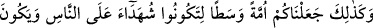
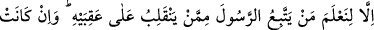
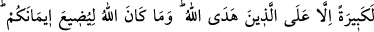
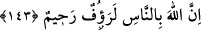
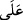

143. İşte böylece sizin insanlığa şahidler olmanız, Rasûl’ün de size şahit olması
için sizi mûtedil (orta) bir millet kıldık. Senin (arzulayıp da şu anda) yönelmediğin
kıbleyi (Kâbe’yi) biz ancak Peygamber’e uyanı, ökçeleri üzerinde geri dönenden
ayırdetmemiz için kıble yaptık. Bu, Allah’ın hidâyet verdiği kimselerden başkasına
elbette ağır gelir. Allah sizin îmânınızı asla zâyi edecek değildir. Zira Allah
insanlara karşı şefkatli ve merhametlidir.
Ey Muhammed ümmeti! Sizi doğru yola (sırat-ı müstakime) eriştirdiğimiz gibi, aynı
zamanda hayırlı bir orta ümmet yaptık. Bu sebeble kıyâmet günü peygamberlerin
kendilerine Allah’ın emrini tebliğ ettikleri husûsunda geçmiş ümmetler hakkında
şâhidlikte bulunacaksınız. Peygamber Hz. Muhammed (a.s.) de sizin hakkınızda şâhidlik
yapacaktır.
“Vasat ümmet”, hayırlı ümmet mânâsında kullanılmıştır. Çünkü bir şeyin en korunaklı
ve en güzel yeri ortasıdır. Kenar taraflar, devamlı olarak tehlike ve bozukluklarla yüz
yüzedir.
Aleyhte yapılan bir şâhidlik (
) “alâ” harf-i cer’i ile lehte olanı ise ( ) “lâm”
harf-i cer’i ile kullanılır. Buna göre Muhammed ümmetinin geçmiş ümmetler aleyhinde
şâhidlik yapmalarında bir terslik yoktur. Çünkü bunların, peygamberin tebliğ
vazifelerini yerine getirdikleri hakkındaki şehâdetleri, yapılan tebliğe kulak asmayan
insanların aleyhinde olacaktır. Ama aynı şey için, Peygamberimiz söz konusu değildir. O
ümmetin lehine şâhidlik yapacak ve onları temize çıkarmaya çalışacaktır. “O halde
“aleyküm” ibâresi yerine “leküm” denmesi gerekmez miydi?” şeklinde bir suâl gelirse
şu cevabı veririz:
“Hayır gerekmezdi. Çünkü burada zikredilen “şehîd”, “rakîb” murâkabe eden, görüp
gözeten, “muttalî”; hal ve hareketlerini takip eden mânâsında kullanılmıştır. O takdirde
“alâ” ile müteaddî olmasında bir sakınca yoktur. Buna göre Hz. Peygamber (a.s.)
ümmetinin bütün hâl ve hareketini gözetleyip takip etmektedir. Eğer iyi davranışlarda
bulunursa onları övecek, doğrulayıp tezkiye edecek; kötülük yaparlarsa tezkiye etmeyip
susacaktır.
Âyetin ifâde ediliş tarzı -mef’ûl önce geldiği için- Hz. Peygamber’in sadece bizim